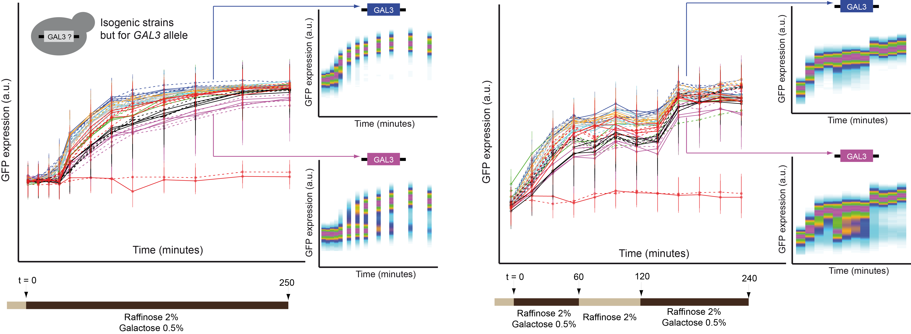
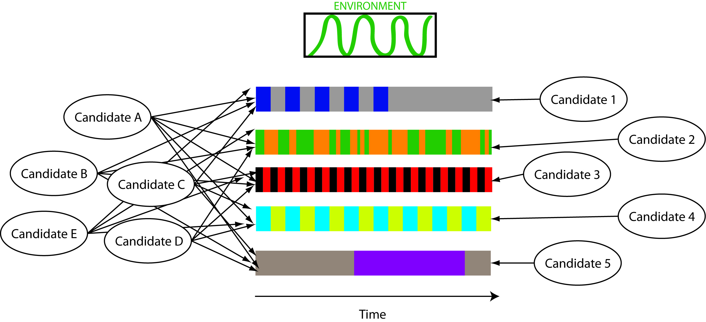

Scientific background: Recent investigations of the cancer cell epigenome are now highlighting a central role played by epigenetics in malignant transformation. In particular, aberrant gene activity of tumor-suppressor or tissue-specific genes can be directly associated to modifications of the epigenome. While an increasing amount of genome-wide data is accumulating, a main challenge in cancer systems biology remains to understand and propose a unifying quantitative model unraveling the fundamental rules that link the epigenetic deregulations to gene expression and hence to specific cancer phenotypes.
Description of the project: We propose here to develop an interdisciplinary strategy to investigate the interplay between genomic, epigenomic and transcriptomic alterations in the context of lung cancer. Combining statistical analysis and quantitative mathematical modeling with molecular biology experiments on specific cell lines and on tumors, we aim at discovering epigenetically regulated genomic domains in lung cancer, as well as at characterizing and modeling these epigenetic “hot” domains and their association with tumor progression and aggressiveness.
Development of a challenging mathematical model of epigenetic regulations, trained on experimental data, will be used to infer failures in the epigenetic maintenance mechanisms that lead to the deregulation of the “hot” domains. Results obtained for lung tumors will be correlated with clinical data (prognosis, lung cancer origin, treatment response, etc.) allowing for the discovery of new oncogenic mechanisms and epigenetic biomarkers and would open the door for the establishment of new anti-cancer therapeutic strategies.
Optimizing growth and survival in face of an environmental signal is a major challenge for single-cell organisms. To adapt the new environment and respond to external stimuli, many cells operate a genetic switch, during which groups of genes are activated of repressed. This type of cellular response has been extensively studied at steady state but the dynamical behaviour of regulatory networks remains poorly understood. The yeast galactose regulatory network is a well-characterized standard model system which offers the possibility to investigate the dynamic regulation of the network at a very fine dynamic scale. Our work aimed to develop a dynamic modeling of network inducibility in order to better understand the nature of the galactose response and to explore how natural genetic variations affect the network inducibility.
We addressed those questions by integrating both experimental and theoretical approaches, taking advantage of the well-defined galactose network. The high complexity of galactose network interactions makes systematic analysis of the effect of polygenic natural variations highly challenging. To bypass this issue, we decided to focus our work on natural variations present in the GAL3 locus, which is the core component of the regulatory response. First, we experimentally characterized the dynamic activation of the network in isogenic cell population, except for GAL3. We observed that natural variation in GAL3 loci is sufficient to convert a dynamically graded response into a transient probabilistic bimodal response. Second, we used this time course experiments to develop a predictive quantitative model of the system inducibility. A comprehensive analysis of the model indicated that natural variations of GAL3 play on two key parameters controlling the network dynamical behaviour: the association constant of galactose to Gal3p and the regulatory strength of Gal3p on Gal80. Finally, we demonstrated that our model is predictive of the effect of single genetic mutations at a broad range of galactose concentration. Together, these results provide a quantitative understanding of the galactose network dynamic response and allow us to better characterize the functional effect of genetic diversity on the system.

Under natural selection, the fixation of a mutation is determined by its impact on fitness (the ability to reproduce), which is tightly linked to environmental conditions. Because natural environments are dynamic, how mutations are selected in fluctuating conditions is a crucial and yet unsolved question. In particular, under repeated exposures to two or more conditions, is fitness averaged over time? This question has been approached by theory1–7 but, so far, not experimentally.
Here, we applied barcode sequencing to the model yeast S. cerevisiae and measured the fitness contribution of 3,568 genes in a periodic environment that oscillated between two saline conditions. We estimate that the fitness of about 2,000 genes in the periodic regime deviated significantly from the time-averaged expectation. This deviation, together with the population variance in fitness, depended on the dynamics of fluctuations. Strikingly, environmental oscillations favored the loss of several genes, including a repressor of the cAMP/PKA pathway and a regulator of protein translocation to mitochondria. This genomic profiling reveals that selection in dynamic environments can not always be predicted from the selection observed in steady conditions, and it identifies vulnerabilities to environmental dynamics in molecular pathways that are conserved across eucaryotes.
